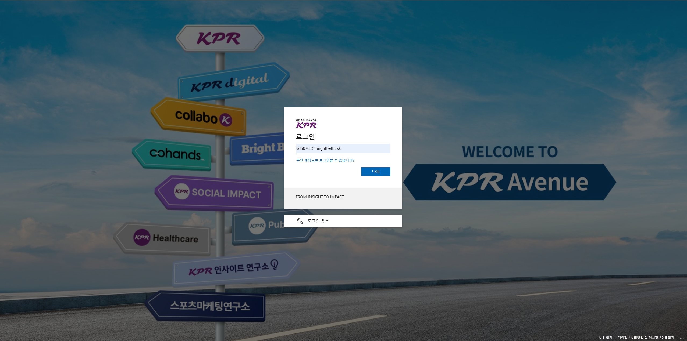
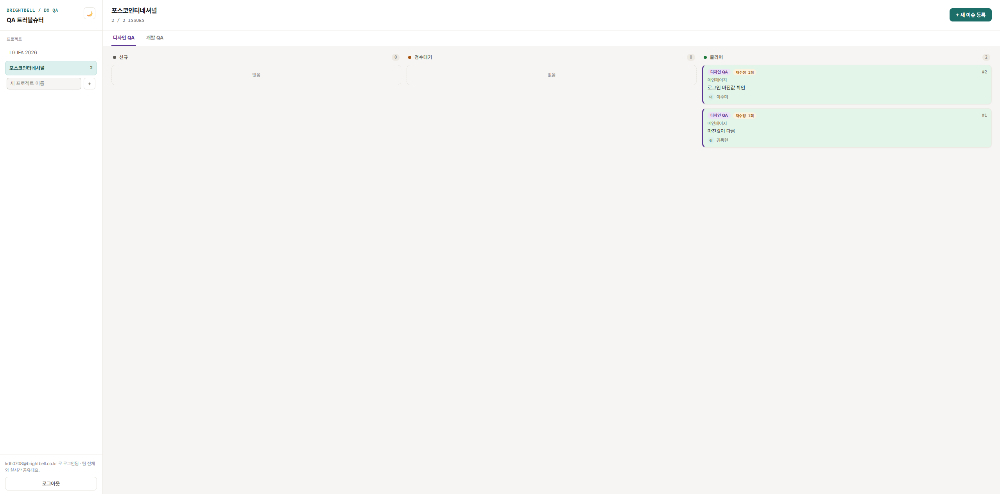
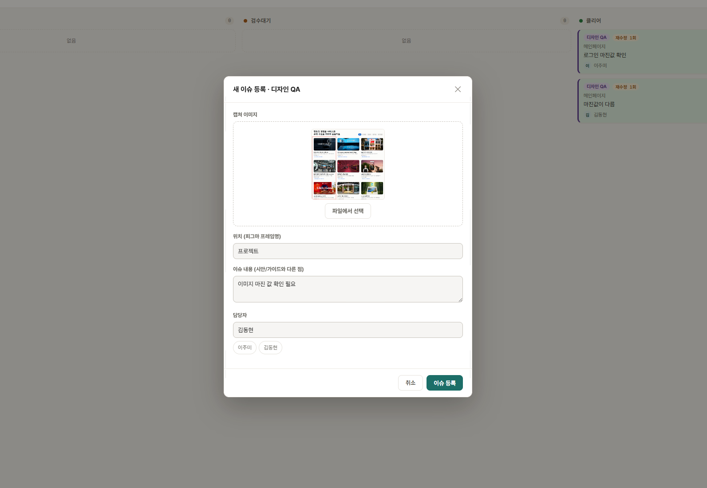
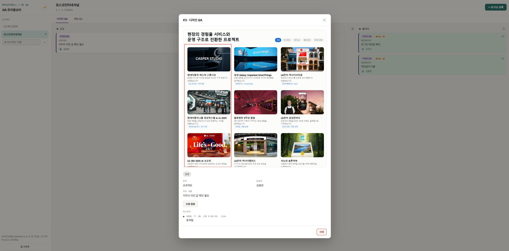

AI 구현 · QA 운영
화면 캡처와 처리 상태까지 흩어졌던 QA 협업을 하나의 운영 도구로 연결했습니다.
프로젝트디자인·개발 QA 트러블슈터
구현 범위Microsoft 인증 · 이슈 등록 · 상태 관리 · 재검수
역할업무 흐름 · 정보 구조 · 화면 설계 · 프로토타입 구현
Microsoft 인증부터 이슈 등록, 재검수, 클리어까지 관리하는 QA 운영 도구입니다.
진행하던 프로젝트의 QA 요청은 화면 캡처, 수정 내용, 담당자 정보가 메신저와 문서에 나뉘어 관리됐고, 수정 이후의 상태와 재검수 결과도 일관되게 남지 않았습니다. Microsoft 계정 인증부터 이슈 등록, 담당자 지정, 수정, 재검수, 클리어까지 관리하는 내부 도구를 직접 기획하고 구현해 팀에 공유했습니다.
다섯 단계 상태 흐름을 구현해 팀이 매일 사용하고 있습니다.
이슈 등록
담당자 지정
수정 진행
검수대기
재검수·클리어

기능 01 · 인증 및 접근 관리
Microsoft 회사 계정으로 내부 사용자만 접근
Microsoft 인증을 연동해 별도의 계정 생성 없이 기존 회사 계정으로 로그인하도록 구성했습니다. 회사 도메인 계정만 접근할 수 있도록 제한해 내부 QA 정보의 사용자 범위를 관리했습니다.
기획 의도: 별도 계정 체계 없이 기존 회사 계정으로 인증과 접근 범위를 함께 관리

기능 02 · 상태 관리
신규·검수대기·클리어 상태를 한 화면에서 확인
각 이슈의 현재 상태와 담당자를 카드로 표시해 팀원이 진행 단계와 다음 조치를 같은 기준으로 확인하도록 구성했습니다.
기획 의도: 메신저 대화가 아닌 상태값을 팀의 공통 진행 기준으로 사용

기능 03 · 이슈 등록
수정에 필요한 정보를 하나의 이슈 카드로 통합
화면 캡처, 발생 위치, 수정 내용, 담당자를 하나의 이슈로 묶어 다음 작업자가 별도 설명 없이 수정 대상과 요청 내용을 확인하도록 했습니다.
기획 의도: 다음 작업자가 추가 설명 없이 수정 맥락을 이해하도록 정보 단위를 통합

기능 04 · 재검수
수정 결과를 재검수한 뒤 최종 클리어
상세 화면에서 수정 요청과 처리 이력을 확인하고, 담당자의 수정 완료 이후 검수자가 실제 반영 결과를 확인해 최종 클리어하도록 구성했습니다.
기획 의도: 담당자의 수정 완료와 검수자의 최종 클리어를 분리
세 가지 판단으로 QA 운영의 신뢰 기준을 세웠습니다.
발생 위치 입력을 필수값으로 만들어 재현 가능한 이슈만 등록되도록 했습니다.
화면 캡처만으로는 발생 위치와 의도가 불명확해 재현이 어려운 경우가 많았습니다. 다음 작업자가 메신저로 되묻지 않고 이슈 카드만으로 작업을 시작할 수 있도록 기준을 세웠습니다.
대화의 최신 메시지보다 상태값을 업무 기준으로 삼았습니다.
메신저는 대화가 계속 밀려 올라가 현재 상태를 다시 확인하기 어렵고 사람마다 같은 대화를 다르게 해석하는 문제가 있었습니다. 상태값을 팀이 공유하는 유일한 기준으로 삼아 해석 차이 없이 같은 화면으로 판단하도록 설계했습니다.
담당자의 수정 완료와 검수자의 최종 클리어를 분리했습니다.
담당자 본인이 수정 완료를 선언하면 실제로는 재현되지 않는 경우도 있었습니다. 완료 선언과 최종 확인을 같은 사람에게 맡기지 않고 검수자가 별도로 재현 결과를 확인해야 클리어되도록 역할을 나눠 QA 신뢰도를 유지했습니다.
메신저 대화를 반복하지 않고 이슈 카드 하나로 QA를 관리하게 됐습니다.
QA 확인 요청을 받으면 바로 접속해 대응 시작
발생 위치까지 기록된 이슈 카드 덕분에 메신저로 되묻지 않고 바로 작업 가능
대화 확인 없이 상태만으로 진행 파악
신규·검수대기·클리어 상태를 팀 전체가 같은 화면에서 확인
완료 선언과 최종 확인을 분리해 QA 신뢰도 유지
담당자가 수정 완료를 선언해도 검수자가 재현 결과를 확인해야 클리어
ICT 개발팀과 사내 적용 가능성 검토 중
팀 내 실사용 사례를 기반으로 조직 전체 적용 가능성을 논의